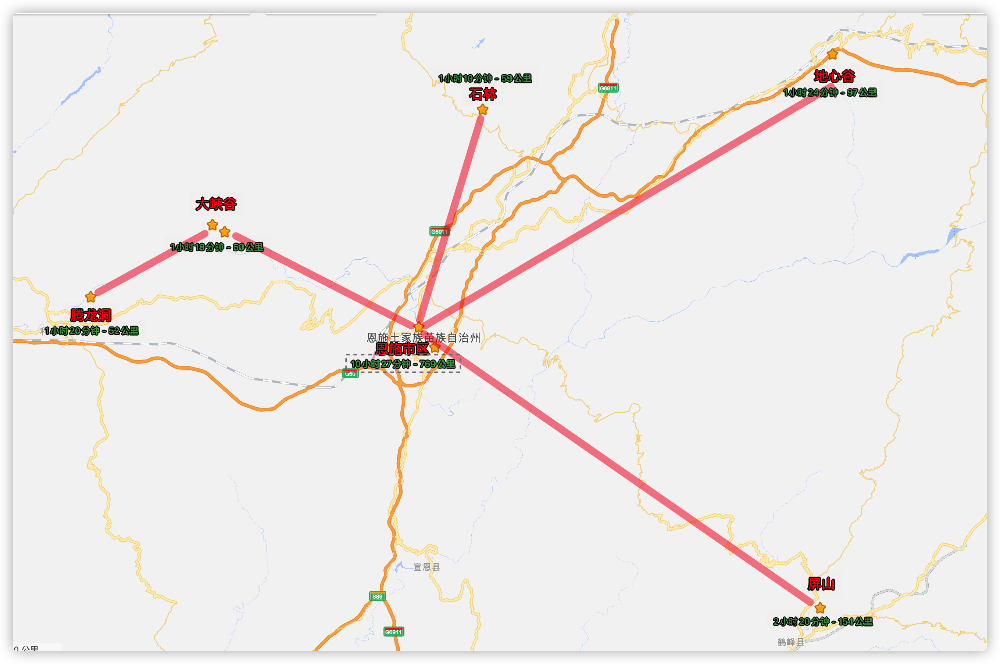
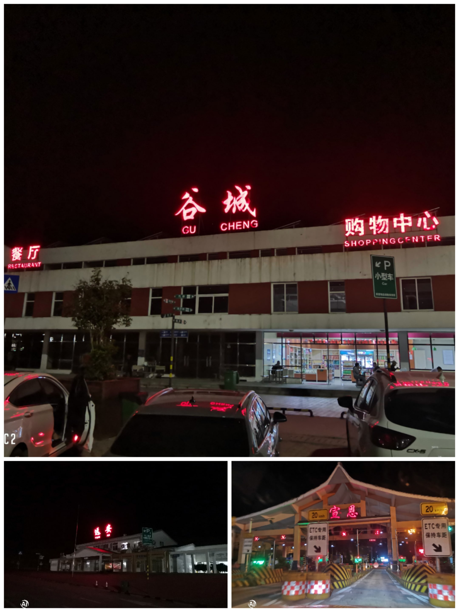
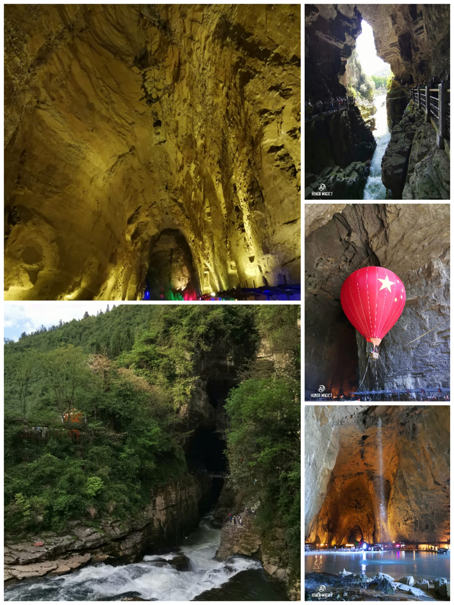
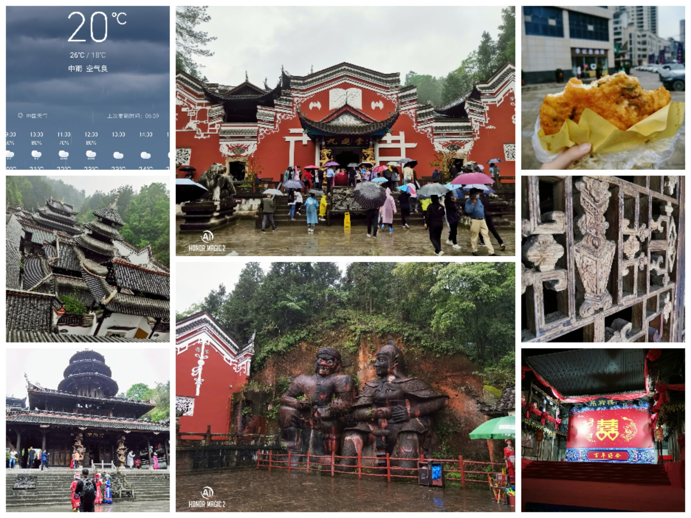
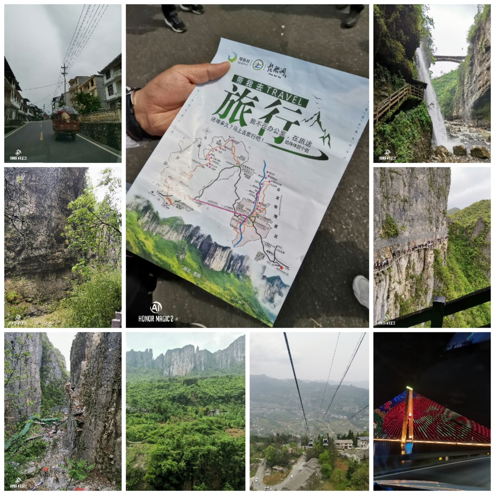

恩施州以如诗如画的山水风光和光怪陆离的奇洞异穴的风景为主！
恩施州以如诗如画的山水风光和光怪陆离的奇洞异穴的风景为主，集中在恩施、利川、咸丰三地，另外巴东、鹤峰还有一些分布。恩施大峡谷、土司城等是当地著名的风景区。恩施隐匿于崇山峻岭之中，有着优美如画的风景，独特的土家吊脚楼，失落的土司文明，都会让你对这片土地产生向往之情。
- 在
4-7月春夏之际- 高山峡谷中，看杜鹃花、看油菜花、云海
- 在
10-11月金秋时节- 枫树、杉树五颜六色，视觉盛宴

- 恩施 - 全国
1. 准备工作
游玩前的准备工作！
- 服装要求
- 推荐运动鞋和运动服
- 春秋
2季多备一件外套，恩施大峡谷早晚温差较大
- 旅行用品
- 备好雨伞、雨衣、雨鞋、登山杖
- 摄影用品
- 相机、手机、充电宝
- 零食饮料
- 尽量少背，景区内沿路有小吃和商店，价格不会太贵
2. 景点路线图
汇总恩施市距离各个景点的公里数及其花费时间！

3. 行程规划 - 第一天
恩施市，湖北省恩施土家族苗族自治州首府，位于湖北省西南部，武陵山北部，清江中上游。
- 行程路线
- 西安市 - 恩施市
- 饮食起居
- 吃饭
- 恩施豆皮
- 恩施合渣
- 寮叶粑粑
- 烟熏腊肉
- 富硒小土豆
- 土家油茶汤
- 神农溪刁子鱼
- 土家掉渣烧饼
- 住宿
- 民宿
- 吃饭
4. 行程规划 - 第二天
恩施大峡谷被称为“喀斯特地形地貌天然博物馆”，拥有众多世界级旅游资源！
- 行程路线
- 恩施大峡谷
- 土家女儿城
恩施大峡谷是世界地质奇观、喀斯特地形地貌天然博物馆，被赞誉可与美国科罗拉多大峡谷媲美。峡谷中有百里绝壁、千丈瀑布、原始森林、远古村寨等，是夏季避暑休闲的好地方。在景区内你可以下到深达百米的地缝中，也可以行走在 300 米高处的悬空栈道上，享受与众不同的刺激感。

景点概况 - 恩施大峡谷
- 用时参考：1 天
- 景区品质：国家 AAAAA 级景区
- 官方网址：
http://www.esdaxiagu.com - 门票价格：七星寨 110 元；云龙地缝 50 元(部分开放)
- 观光设施：景交车 30 元(含往返)；索道上行 105 元；索道下行 100 元；手扶电梯 30 元
- 开放时间：
08:00-16:00(3 月 1 日-11 月 30 日) - 服务热线：
0718-8542-333；400-0718-126
景区印象
- 大峡谷的“镇谷之宝”一炷香
- 亚洲最长的户外扶手观光电梯
- 落差高达
792米的峡谷观光索道 - 中国最大峡谷山水实景音乐剧《龙船调》剧场
游览线路(坐索道游玩路线)
- 游客中心乘坐景交车
- 云龙地缝入口乘坐索道
- 抵达七星寨
- 七星寨出口换乘景交车
- 抵达云龙地缝入口
- 云龙地缝出口换乘景交车
- 抵达游客中心
游览线路(不坐索道游玩路线)
- 游客中心乘坐景交车
- 云龙地缝入口换乘景交车
- 抵达七星寨入口
- 七星寨出口换乘景交车
- 抵达云龙地缝入口
- 云龙地缝出口换乘景交车
- 抵达游客中心
注意事项
- 游玩攻略
- 景区门票仅限当日有效
- 早上游玩七星寨景区，下午游玩云龙地缝景区
- 可在官网进行门票预订(七星寨+地缝+车票+索道上行=280)
- 景区目前七星寨景区全线对外开放，云龙地缝景区云龙瀑布至小蛮腰天梯开放
全国第八个人造古镇，仿古与土家吊脚楼相结合，完美的体现了土家族的民风民俗。吃喝玩乐设施齐全，拥有全国首创室内情景剧场和湖北省内最大的水上乐园。女儿街是女儿城的代表，位于古城的核心位置，是恩施市区商业最为繁华的街区之一。
景点概况 - 土家女儿城
- 用时参考：2-3 小时
- 景区品质：国家 AAAA 级景区
- 开放时间：全天(一般建议晚上去)
- 服务热线：
0718-8028699
景区印象
- 卖各种吃的
- 观看免费的表演(19:50-20:50)
- 体验土家族的风土民情
注意事项
- 人很多，需要注意拥挤以及财产安全
- 节假日非常堵，建议乘坐公共交通或者打车
- 饮食起居
- 吃饭
- 恩施豆皮
- 恩施合渣
- 寮叶粑粑
- 烟熏腊肉
- 富硒小土豆
- 土家油茶汤
- 神农溪刁子鱼
- 土家掉渣烧饼
- 住宿
- 民宿
- 吃饭
5. 行程规划 - 第三天
腾龙洞是国家 AAAAA 级景区，属中国已探明的最大溶洞，在世界已探明的最长洞穴中排名第七，世界特级洞穴之一。
- 行程路线
- 腾龙洞
恩施自治州土家族、苗族儿女的聚居地，山清水秀，如诗如画。腾龙洞景区由水洞、旱洞、鲤鱼洞、凉风洞、独家寨及三个龙门、化仙坑等组成。洞中有山，山中有洞，水洞旱洞相连，主洞支洞互通，洞内终年恒温 14-18 度。洞中仅象形石就有 1000 余种，景观千姿百态，神秘莫测。洞外山清水秀、风光怡人。
景点概况 - 腾龙洞
- 用时参考：1-3 小时
- 景区品质：国家 AAAAA 级景区
- 官方网址：
http://www.tenglongdong.net.cn - 门票价格：150 元
- 观光设施：景交车 20 元(含往返)
- 开放时间：
08:00-17:30(夏季) - 服务热线：
0718-7262455
景区印象
- 动情的歌舞
- 看点：中国唯一的原生态洞穴剧场
- 地址：利川市清江大道(上午 11:10 点/下午 16:00 点)
- 购买：官网可以购买门票
- 梦幻的激光
- 看点：古老与现代的完美整合
- 地址：利川市清江大道(上午 10:20 点/下午 15:00 点)
- 购买：官网可以购买门票
- 震撼的洞穴
- 看点：最宏大的洞口，一座山就是一个洞口
- 地址：利川市清江大道
- 购买：官网可以购买门票
- 壮美的瀑布
- 看点：卧龙吞江–未见其洞，先闻其声
- 地址：利川市清江大道
- 购买：官网可以购买门票
- 动情的歌舞
游览线路
- 游客中心乘景交车
- 云龙地缝景区入口
- 游览云龙地缝景区
- 云龙地缝景区出口
- 乘坐索道
- 索道上站广场
- 游览七星寨景区
- 乘景交车游客中心
注意事项
- 饮食起居
- 吃饭
- 住宿
6. 行程规划 - 第四天
石林形成 4.6 亿年前的奥陶纪时期，整个石林犹如一座海底迷宫，美轮美奂。
- 行程路线
- 屏山大峡谷
- 梭布垭石林
屏山峡谷距离鹤峰县城东去约 10 公里。历代土司王把爵府均建于屏山，今天还存有许多土司爵府遗址。屏山四周峭壁悬空，在峡谷中的水面游弋，抬头看去，四周峭壁耸立，溪流环绕。

景点概况 - 屏山大峡谷
- 用时参考：1 天
- 景区品质：国家 AAAAA 级景区
- 门票价格：免费
- 观光设施：坐船 100 元(悬浮船)
- 开放时间：
08:30-16:00 - 服务热线：
0718-5282222
景区印象
- 峡谷行船：特点十足，视觉效果很冲击
- 谷底河边栈道：走的轻松，水和植物养眼
- 拍摄悬浮船：要等到光线打到谷底水面才能出效果
- 沿着岩壁步道上到山顶：回到停车场，风景壮观
注意事项
- 整个屏山大峡谷游玩下来 2 个小时
- 选择了当地著名的田家大院吃饭休息看看风景
- 售票、停车和入园三地分离，但是指示不明确，需要自己问
恩施梭布垭石林旅游区地貌奇特，规模宏达，被称为世界第一奥陶纪石林，地处北纬 30° 的神秘恩施。这里深藏着 4.6 亿年前的海底地质奇观，是“海枯石烂”的真实写照；梭布垭同时封存着 5000 年前古巴人神秘文化，是中国优秀的民间艺术之乡，恩施土家女儿会文化圣地。
景点概况 - 梭布垭石林
- 用时参考：1-3 小时
- 景区品质：国家 AAAAA 级景区
- 官方网址：
http://www.tenglongdong.net.cn - 门票价格：78 元
- 观光设施：景交车 30 元(入园全天不限次搭乘)
- 开放时间：
08:00-18:00(4 月 1 日-10 月 31 日) - 服务热线：
0718-8788066
景区印象
- 植物迷宫：20 元
- 飞拉达丛林穿越: 120 元
- 激情越野沙滩车：120 元
注意事项
- 狮子关景区门票 120 元/人
- 建议网络购票：套票(门票+景交车)才 98 元/人
- 扫码进入官方的 小鹤导览 查看自己的位置
- 饮食起居
- 吃饭
- 住宿
7. 官方总结
不登山，不知山高；不涉水，不晓水深；不赏奇景，怎知其绝妙。
- 品味古朴吊脚楼
在恩施崇山峻岭之中散落着一片一片安静的小村庄，这里有恩施土家族的特色建筑——吊脚楼。小溪，是恩施市盛家坝乡的一个自然村落，一条清溪从山谷中流过，数十栋保存完好的吊脚木楼，或聚或散在两岸茶园稻畴之间，春花无数，秋实满山，朝有山风吐雾，暮有溪水映霞，美得让人心醉。
- 探寻失落的土司文化
由于历史与地理的原因，“土司文化”一直徘回于我国主流文化的边沿，一直不被人所知。多处土司城遗址在恩施特殊的地理环境中得以保存。走入土司城，犹如时光倒转，每一片砖瓦，每一个器物都向你诉说着历史，静静在城中游览，辉煌的土司文化逐渐在脑海中立体起来……
8. 个人总结
简述一下，五一黄金周去恩施的大致纪要！
四月份的时候，就打算五一的时候，出去旅游一次。本打算是去甘南、青海那边的，因为一路都有比较合适的落脚点，比如兰州、西宁之类的。但是因为五月初甘南还在冷的时候，加之这次出行还带了小肉肉，所以最后决定往南方走。看着看着，就决定在张家界或者恩施之前选择一个，考虑了自驾的路程和时间，最终选择了恩施。
去之前我这边准备了上述看到的攻略，虽然看着也不是很好的样子，但是也包括景点、门票、吃饭等相对来说重要的信息，基本做到的了心中有数的情况，同时在前一周的时候把住宿也给敲定了。咳咳咳，那就等待五一准时出发啦！
- [1] 五月二日 - 第一天 - 赶路
五一第一天修整，第二天早上十点开始出发，上绕城，走包茂高速。但是万万没想到的，在上包茂高速的时候大堵车。前一个小时，高德地图还显示高速畅通的，但是现在却堵车了。原本是个小时的车程，再看着时间一点点的这样耗下去，到达恩施都快到凌晨一点了，心里有点酸爽。后来在高德地图的群聊里面看到，原来是前面有一个大半挂和两个小车发生的剐蹭，导致卡到了哪里。
看着迟迟进不来包茂高速，而且即便是上了高速，前面也还有好几公里的深红色，郁闷。既然包茂不通，随即决定上另一条高速，虽然会比现在多一个小时的路程，但是最其他不会耽搁在堵车上。即便是这样的决定，等到出西安市，已经过去了五个小时。咳咳咳，五个小时还没有出西安市。选择了备用路线，我和我爸两个人换着开，终于在第二天凌晨两点多到了，恩施下榻的民宿了。

- [2] 五月三日 - 第二天 - 腾龙洞
到了恩施都凌晨了，还没有睡几个小时就要开始赶路，去腾龙洞。
土家族这里山很多，城市基本就是生存在山中间的，所以通行的话都是靠隧道，基本和秦岭山脉的一样，隧道接隧道，特别多。而且恩施的山也特别有特点，不管是大的还是小的，都像是一个一个的馒头趴在了地上，所以这里人把这种山都成为馒头山。
随着一个多小时的路程，就到了腾龙洞。腾龙洞，还是非常有特点的，从外部远看，根本和中国已探明的最大溶洞这一 title 联系在一起。但是知道你走进去之后，才发现内部别有洞天。从下面的图片就可以看到，里面是一个非常非常大的洞窟，感觉就像是把整座掏空的感觉。里面有洞穴剧场(马马虎虎)、激光秀表演(有些差强人意)、氢气球(还是挺漂亮的)，还可以通观光车、开汽车、走挖掘机(不知道怎么弄进来的)，真的感叹大自然的鬼斧神工。而且，这还是没有开发完的状态，后续还会向后延伸的。
等到回来的时候，天都快黑了，确实有些疲惫，所以晚上就没有出去，修整一晚上。

- [3] 五月四日 - 第三天 - 土司城/女儿城
今天早起本来是打算去恩施大峡谷的，但是因为下雨(虽然我咨询了景区说是正常开园)的原因，导致走到半路就折道而返了，只能在市里逛逛土司城和女儿城。
幸亏带的伞够多，不然还得卖出雨衣了。买了门票，进了土司城。下面售票的这里，算是土司城的大门，进了大门之后，需要走一条长长的大路。一侧是小河，一侧是修建的庙宇、祠堂之类的。走到的路的终点，就到了土司城的真正核心所在，即这才是土司居住的地方。门口的几个石人还是挺有意思的，说是一个是土家族的人，一个是士兵，象征军民关系非常融洽。在土司城登顶的时候，恰逢有个网红在直播将土司历史，顺便听了听，大致所示：
巴人早年生活在江汉平原一带，后楚人强大，巴楚相争，巴人失败。巴人退入现在叫清江古称为夷水的一带，沿夷水西进，势力达到川东地区。在春秋时期建立了巴人第一个奴隶制诸侯国巴子国。公元前 361 年被强大的秦国所灭，部分巴人则退居到湘鄂川黔山水毗连的武陵地区，并与当地的一些部族相融合，形成土家族。宋代时则称这一带生活的巴人为”土人”，以后土人称外来汉人为”客家”，称自己为土家。
土司制度是历史上中央封建王朝，对少数民族地区，实行归属中央，权力自治的一种政治管理体制。土司土地不入中央王朝版图，人口不入中央王朝户籍，生杀在掌、称雄一方。土司王：实际就是一个地方的土皇帝。如今所见土司城是 1998 年恩施州民委策划建设，2002 年建成开放的。这座仿古土司庄园建筑群，旨在再现土家族地区土司时期的政治、经济和文化，反映土家族的历史渊源，展示土家族古老而淳厚的民风民俗。
土司城不大，所以没几个小时就转完了，恰逢还在下雨，就会民宿休息了下，晚上去趟女儿城。女儿城没啥的，就是一个大型的购物广场(都是人为建的，凭空生出来的)，里面有戏台、游乐场、海洋馆、小吃街、茶馆、酒店，等等。要说有什么好的呢，我还真说不上来，不推荐来吧！人巨多无比，尤其是恰逢五一假期。

- [4] 五月五日 - 第四天 - 恩施大峡谷
因为昨天下雨的原因，导致只能在最后一天到恩施大峡谷，计划里面的地心谷、屏山大峡谷、梭布垭石林都没时间去了。吃了早饭，就往大峡谷去，看着导航也没多少公里，但是走起来才发现居然都是盘山路。盘了好久才到了景区停车场，因为是节假日的原因导致车无法开上去，只能徒步走几公里才能到售票/检票处。
按照计划先走了，先走的云龙地缝，上来三十大洋坐的观光电梯，没想到的是居然还有走半个多小时才能到做缆车的地方，坑呀！中间吃了点东西，坐缆车上了七星寨，开始爬山。听景区向导和当地担担帮的人说，爬完需要 4-6 小时，结果我们因为晚上还要赶路，三个小时就到底了。很多景点都是走马观花的看了看，值得一说的地方就是下图所示的长空栈道了，算是全程最为亮眼的地方了，挺长的而且确实比较刺激。
快到出口的时候，看到工人正在对一座山进行开发，下面也有对应的照片，确实修建起来很不容易，硬是靠人来一点一点的铺路和搭建防护(没办法上机器)。一方面，感受到了景点开发的不易；一方面，有感觉这样算不算在合理的范围内破坏生态环境呢？真是一个值得思考的地方……
大约在六点多的时候，到达了停车场，还没来得及吃饭，就不得不开始开车赶路了。直接在停车场使用地图，导航西安，没有走回头路，而是规划了一条新道路，看着很快就可以上高速到安康了。但是，万万没想到，顺着导航走了两个多小时之后还在大山里曲折的走环山路。我的半个小时上高速、又半个小时上高速、再走半个小时上高速，简直就是一个笑话似的。
从天亮走到了天黑，结果还在大山里，绕来绕去。走了大概四个小时的山路，终于上了高速，但是没过多久就从高速下来了(因为就只通了这段路称)，绕了几条路，过了一次长江，结果又到了环山路上了。我的天呀！简直疯了！高德地图太坑了！相当于从恩施到安康，我们选择了一条全程低速的道路，虽然看着总公里数很少，但是都是这样的盘山路速度根本提不上去，时间就这样一点一点的拉长了。到了这里，也没办法，只能硬着头皮往前走了。就这样，两个人换着开，绕来绕去，拐来拐去，又走了三个小时才终于又可以上高速了。
尴尬的是，这时候车还快没有油了，给其中的一个服务区打了电话，说是这条线路刚刚开的，全程三个服务区都没有加油的。所以只能在地图上面找距离最近的加油站，但是这里算是县城，不像大城市，这里很多加油站晚上是不营业的，心里有点慌了。跑到了一个加油站，看着是营业的，欣喜若狂，但是进门之后一个人都没有的，我连续大声喊了好几次都没有一个人回应我，懵逼了。我跑到外面绕了一圈，还是没人，我又跑进去坑坑坑、扛扛扛的到处敲门。突然有个人，从一个门里出来了，眼神里像是想吃了我一样的瞅着我，我连忙说实在不好意思，车没油了。那人连看都没看我，出门开油箱盖子，加油，直到我付款全程没看我也没理我，没说一句话。懵逼了……
管不了那么多了，加了油，心里总算踏实了，上高速，往安康酒店走(直接回西安时间开车太久了，容易疲劳驾驶，不安全)，到酒店也都二三点了。本来是打算洗澡的，结果洗漱了下，就感觉睡觉了，真的累了，这盘山路开的人头大，把我着前几年的盘山路加到一起都没今天的多。翌日，直奔西安，一路畅通！

- [5] 总结与教训 - 关于自驾游的相关指南
带孩子的话，最好是去比较平缓的地方，比如甘南、三亚、青岛之类的地方，不要选择什么山了、大峡谷、溶洞之类的不适宜行走和负重(孩子走不动了或者睡觉了，这就是你的无形负重)的地方。
使用地图导航的时候，一定要看好具体的路线，比如要走多久的低速才可能上高速、高速是否是全程的呢？还是中间夹着其他路线呢？今后是对应盘山路和低速，说拜拜了。极不好开，而且费力费神，耽搁时间。
如果是住酒店的话，最好旅行箱或者后备箱可以带一个锅或者煮东西的工具，这样即使当地的饭菜不合胃口的话，也可以自己煮东西来吃。再不行的话，晚上还可以弄夜宵给自己犒劳犒劳，不是！
虽然计划总是赶不上变化，但是该做的攻略还是要做的，对于当地还是需要有一定的了解。最好的话，对于一些设计的历史知识也进行相应的科普和涉及，这样在后续自己参观景点或者和他人交流的时候，也会有一定的基础，以至于一问三不知或者到处瞎看，摸不清门道。
就这些了，期待下一次旅行！